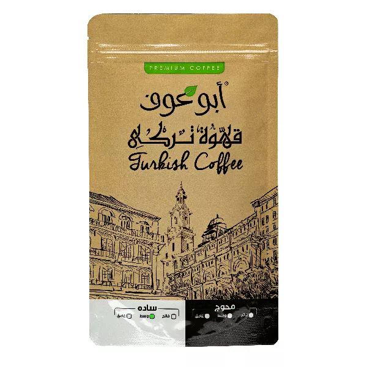
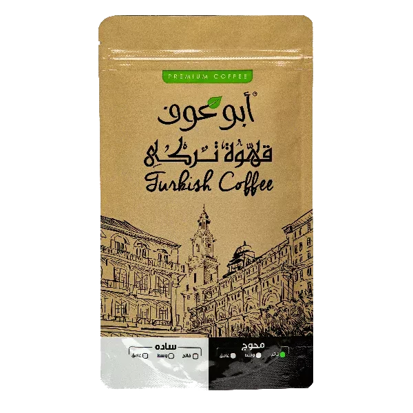
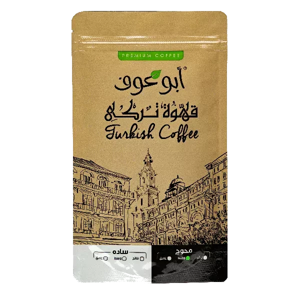
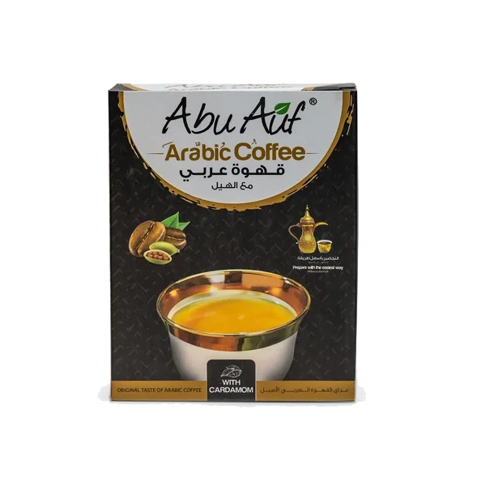
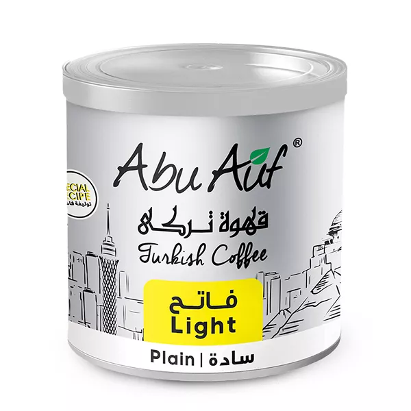
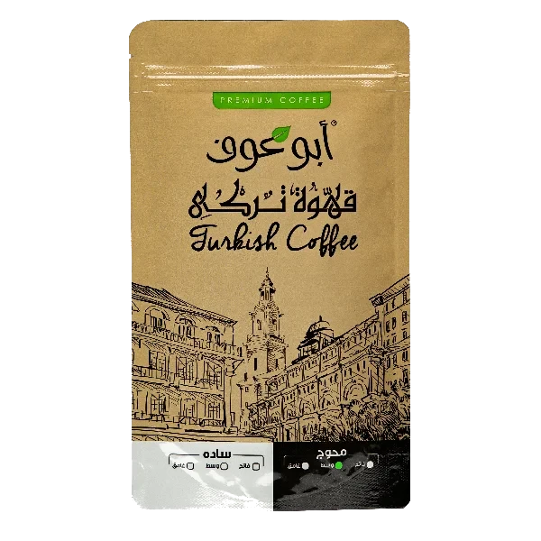

1
أكثر من 30 نكهة قهوة لذيذة تنعش الحواس — من التركي والبرازيلي للإسبريسو والقهوة المطحونة طازة، محمصة على أصولها ومعبأة تحافظ على الريحة لآخر فنجان.
12 منتج
لا توجد منتجات في هذا القسم حالياً.






